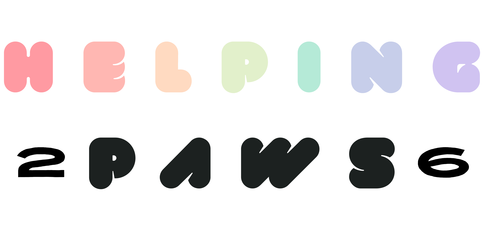

✕
Find the Location


Helping Paws is the volunteering side of Furosion. This meetup is your chance to meet the team, explore roles, and see how events come together. Come learn, connect, and decide if you want to join the team!
Sunday, 5th of April 2026
12:00 – 14:45
Smart/Business Casual preferred, but optional
At this meetup, you'll:
This is the only volunteer info session—we don’t run multiple signups. It’s your chance to get a feel for volunteering with us.
Interested? Please register using the button below. Registration is required to attend. You’ll meet the team, explore roles, and get a clear picture of what volunteering entails.